ある族の歴史を最も遠くを振り返ることができる人は、自分の族の未来を遠く見ることができる人とあるイギリス 人がおしゃいました。したがって、自分の民族を良く理解することは、将来、より統一された発展した族を建設するこ とができることにつながっているのではないか。 カヤンの歴史の概要を読むことで、カヤン族は何処から誕生したのかというカヤン族のルートや、性格、日常生活、 伝統的な楽器、文化的慣習、伝統的な祭り、独特の服装、社会構造の流れ、信仰と崇拝などが見られます。それだ けでなく、抑圧と戦う民族集団であるということも理解するようになると思います。
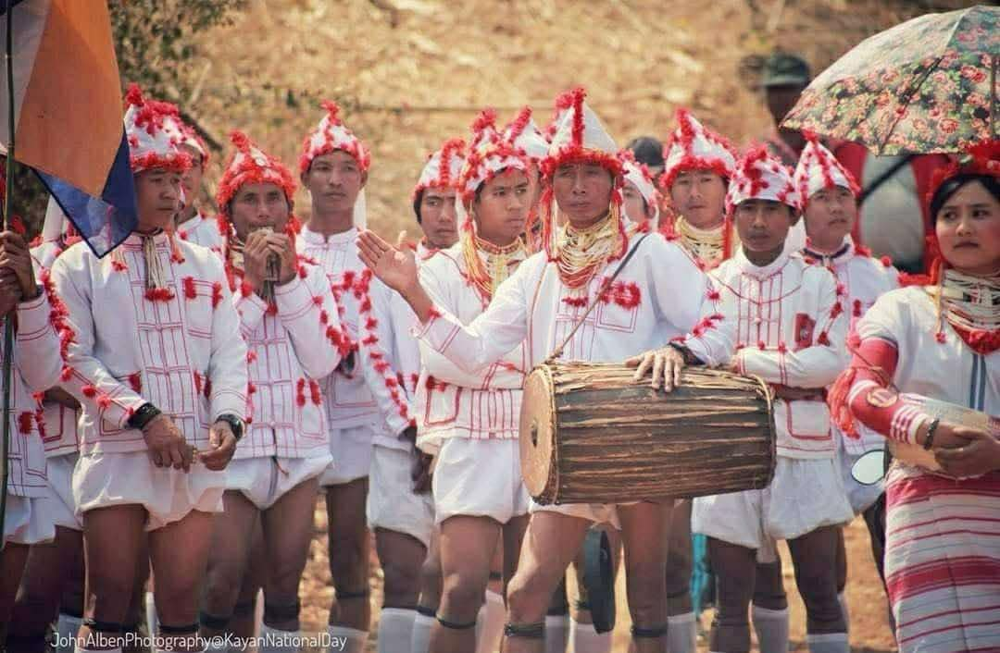
カヤン族は 世界の三つの民族グループである ネグロイド（肌の黒い部族）、ユーロフォイド（白色人種）、モンロロ イド（黄色肌の部族）のうち、モンロロイドに由来するのです。ミャンマーに最初に入国した ピュー 族、テット族とカン ヤン族という三つの民族のうち、カヤン族はカンヤンという族からの子孫である。 カヤン族は 紀元前1125年に 初めてミャンマーに一回、一 部族に入国しました。また、紀元前739年にもう一回参入しました。 特に、カヤー州、シャン州、カレン地区、ネピドー地区に暮らしてい ます。全域合わせて、約30万人います。カガン族、ラウイ族、ラタ 族、カクー族、四つの名に分けて見られます。 2000年4月８日から10日にかけて、カヤー州デイモソ郡区パンぺット村でカヤン族が集まり会議を開催した日を契機 にカヤン建国記念日という日が誕生しました。国旗と上記で記載した全ての部族はカヤン族であると特定されたの である。
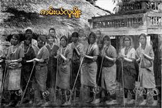
カヤン族は 主に、山岳地帯に住んでいます。深い 森があり、自然が豊かなので、一年中雨が降る所も あります。その為、毎年輸送上の困難に直面してい るのである。 さらに、カヤン族は政府からの教育支援や 医療が不十分なた め、発展の遅れる地域、いわゆる 民族であると言っても過言ではあ りません。現代、多くの若者達が 家族や 地域作りをより良くするた めに、都市部へ移住してきたのである。
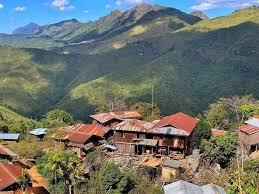
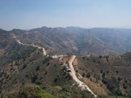
カヤン族は、家族の責任を重視し、お互いに責任を負います。兄弟姉妹の関係では、長男を父親のような存在と して、長女を母親の存在として尊敬します。また、家族の経済的な困難が厳しくても、親達は 子供が生まれてから 結婚して別居をするまで 教育やサポート、様々な面倒を見るのである。
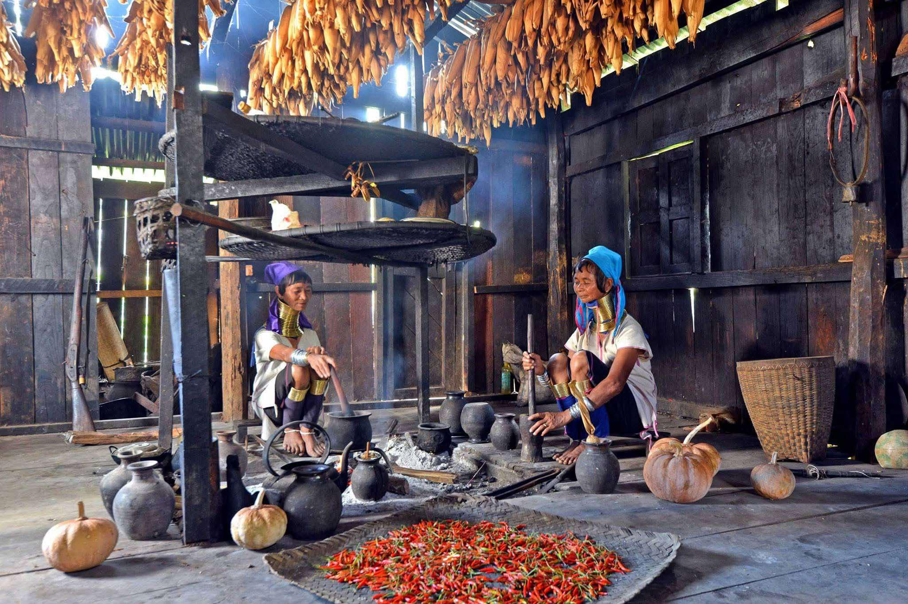
カヤン族の伝統的な信仰はタクータイ教で、カンクアン教としても知ら れています。神様は、人間と非人間の両方を含む全ての生物と無生物 の創造主であるということを、祖先の時代から信じられてきた宗教であ る。
（PIME）ピ・メイと呼ばれる神父さん達が カヤン族の住んでいる地域に占拠して以来、約1870－1880年にペコ ン部の パレー村、カフー村などでロッコという神父様からの キリスト教の教えの受け入れで、カヤンの人々はキリ スト教を信奉し始めたのであり、キリスト教は 約120年以上 信仰してきた宗教である。 （キリスト教は カトリック教のこと）
仏教が カヤン地方に伝わってきたのは、まだ200年もたっていません。1866年、テ・ティ【近い発音で）という 村に 仏塔が建てられ、カヤン族は仏教を 信仰し始めたのである。 現代では、宗教、文学や経典の影響により、カンクアン教とバラモン教の信仰者は 少なくなり、仏教とキリ スト教の信仰者が増えたのである。
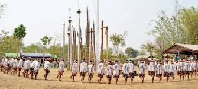
カヤン族は もともと独自の文学やアルファベットを 持っていませんでした。四つの名に分かれてあるカ クー族、カガン族などの話す言葉は、音程は 異な りますが、意味は似ているのです。したがって、文学 言語を作字するようになったのである。 1897年、ターン-タウンジー市のマウンブロ村を お訪れになったポー ル・マンナ神父様は、マウンブロ村の住人であるアイ・バン・カンと名の若 者から カヤン・カドー語を研究し、ラテン文字を使用してカヤン文字を 作 字し発展させ始めたのである。 その後、ラテン文字を使用して出来た文献は カヤン・カガン族や カヤン・カクー族にも 広まりまして、2000年、4月 の8日から10日までの カヤン全族会議では、カヤン族の 共通文学として ラテン語に基づく文学を確立するこ とに決定したのである。
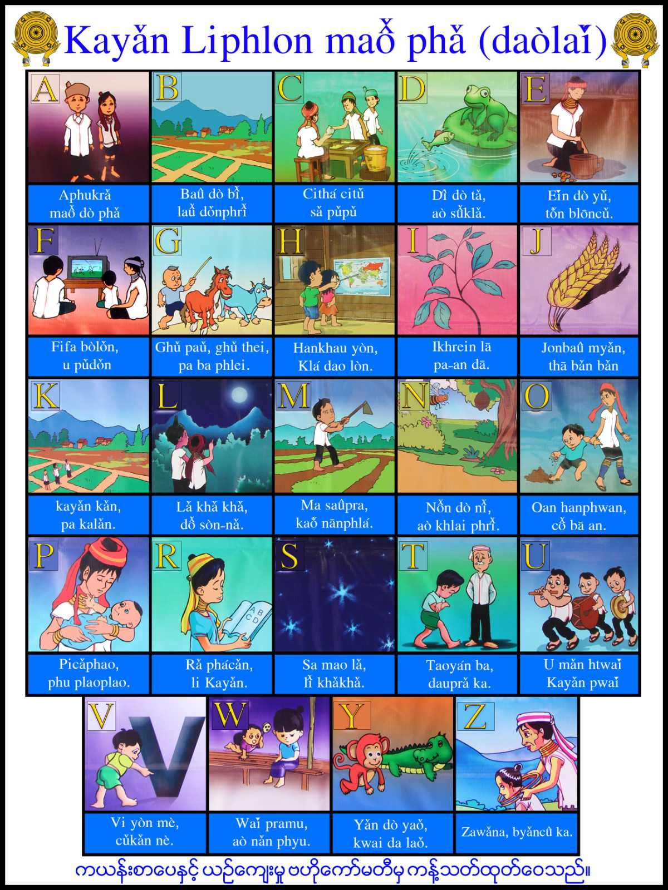
カヤン族は 自らの信仰と伝統的な習慣を守り つつ、自らの地域で幸せに自由に暮らしている のである。 毎年、タクータイ祭り、大晦日（NEW YEAR ）、狩猟祭り、新築祝い、葬 儀、建国記念日などの 伝統的な祭りが、子供から大人まで皆で大いに盛 り上がるのである。 どの祭りでも、カヤン族達は 自分の文学、伝統舞踊、伝統 楽器、伝統衣装などを展示し、全ての訪問者に 伝統的な食 べ物を振る舞うことで、自分達の伝統的な文化遺産を守って いる。さらに、スポーツ競技会が開催され、カヤン族の偉い 指導者の並外れた行動を模範し評価するために 知識が共 有されることも多々あるのである。
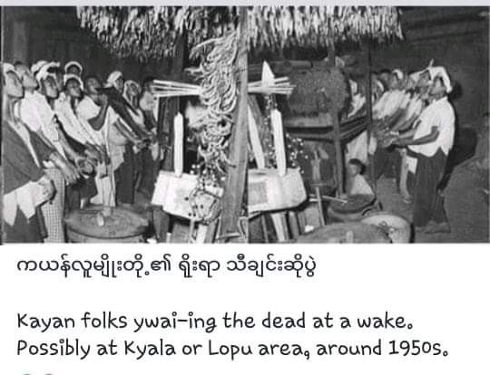
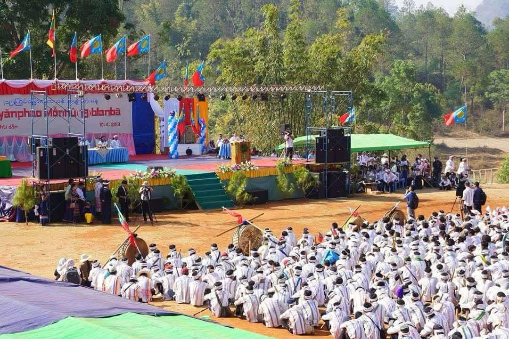
カヤン族の最も神聖な文化遺産の一つは、「 ロ ングネック」と呼ばれる青銅を ぐるぐる首に巻く ことです。もともと、青銅の輪を 身につけるの は、母なるドラゴンのような首の長い外見を作り 出すためであるという信仰がカヤン族に由来し ているのである。
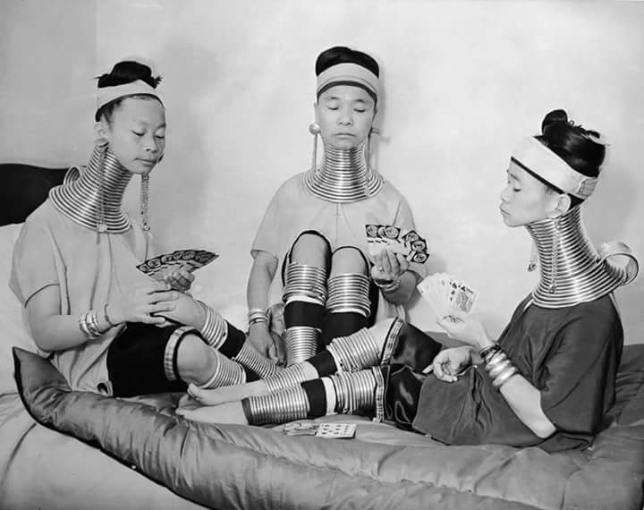
健康、幸運、そして頻繁に移動しなければならなかったため、貴重な 金や銀が無くならないように銅の輪を作り、首に巻いたようである。面白 いことに、夜寝る時も輪を外さないことから、伝統を守っていることが 分 かります。
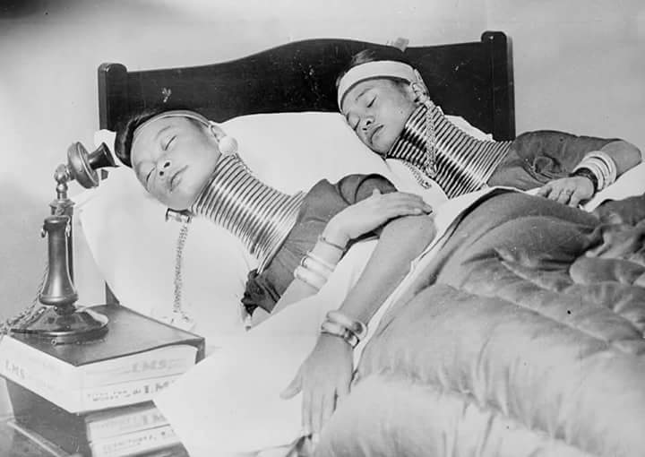
カヤン族は 世界の屋根として知られる モンゴル高原から 太鼓を持ち込み、他の民族と同様に太鼓を伝統的な楽器と して使用する少数民族である。人々を集めるよう呼びかけ、 緊急事態であろうと、軍事パレードであろうと、お祭りの祝賀 であろうと、そういうお祝いやお祭りなどに使われます。
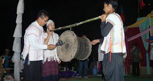
バッファローの角の先端を切り落とし、美しく仕上げた後、先端 の3分の2の部分に穴をあけ、そして、いろんな工夫をして出来た伝 統的な楽器である。上記の太鼓のように狩猟、群衆やお祭りなど に使われています。それだけでなく、戦争の際、警報ベルとしても 使われていたのである。
カヤン族の人々は祖先の時代から主に農業や牧畜 といった職業で生活を立てています。家畜は家庭消 費とお祭りのときの供養のためや、結婚式で使用す るために、飼育されるのである。 手工芸には、裁断して仕上げた織物、鍛冶、製材、陶芸が含まれて おり、特に男性がコレラの工芸を習得するための手順を学び、伝統的な 手工芸として 共有してきたのである。
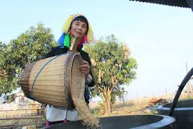
イギリス革命の間、カヤン族の人々は自らの領土 を統治することを決意し、タイ・バ・ハン、アイット・ タウン、二ェイン・カ・ヤン・タン（ウー・シュエ・エー） 等の指導者が登場し、革命で勇敢に戦ったのであ る。 カヤン族は強くて勇敢な性格を持ち、祖先の時代から不正と戦ってきたのである。
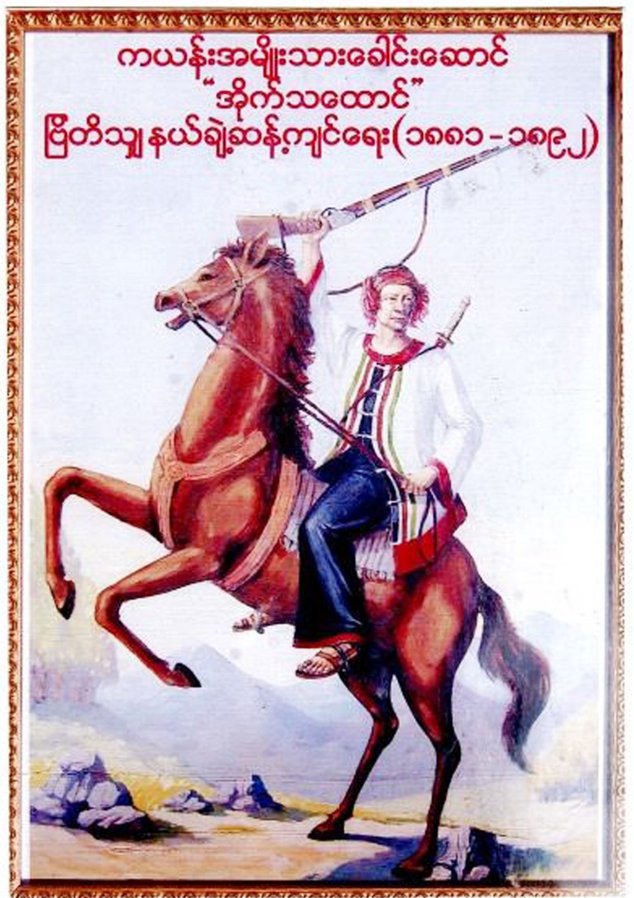
カヤン族は、2021年の軍事クーデター以来、独裁政権に厳しく抵抗 している民族である。 結論として、カヤン族は 自らの地域、文学、伝統、伝統文化を守っていきたいと考えている族であり、国全体の平 和を願う国民少数民族である。さらに、少数民族の存在には 文学と文化が欠かせないものだということを知り、そ れを 尊重し、保護し守り続けたいと決めている族である。
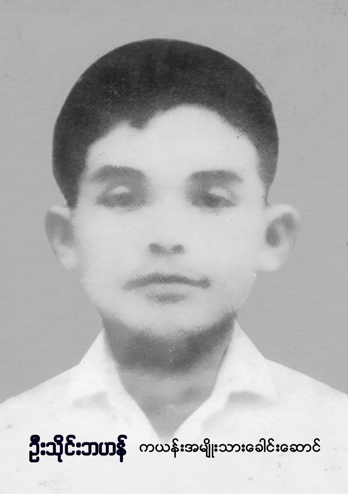